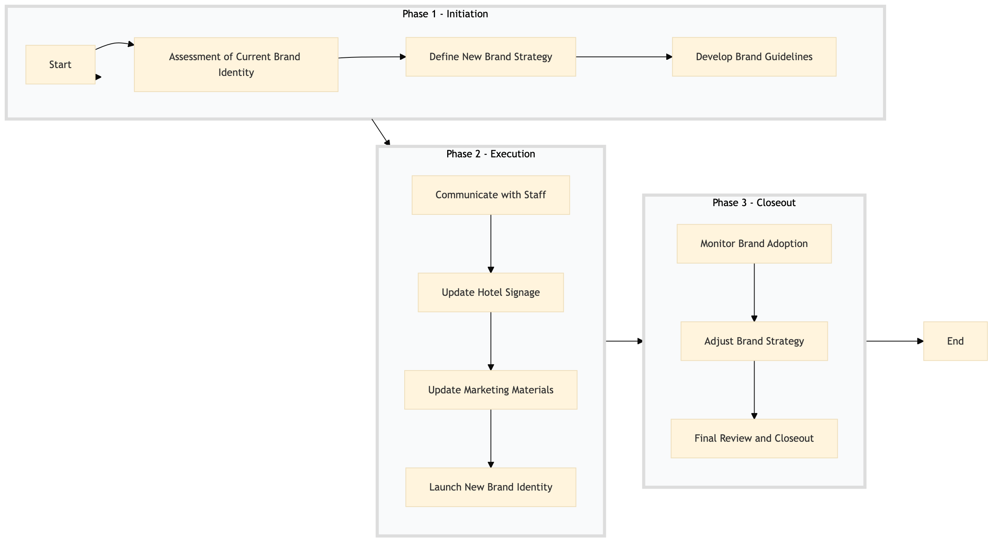

| Role | Steps |
|---|---|
| Brand Manager | 1.1 1.2 1.3 3.1 3.2 3.3 |
| Marketing Director | 1.2 2.3 2.4 3.1 3.2 |
| General Manager | 1.1 2.1 2.4 3.3 |
| Training Manager | 2.1 |
| Executive Housekeeper | 2.2 |
| Facility Manager | 2.2 |
| Step | Name | Role | System | Input | Output | KPI | Dec? | Exc? | Pain Point / Risk |
|---|---|---|---|---|---|---|---|---|---|
| 1.1 | Assessment of Current Brand Identity | Brand Manager | Oracle OPERA Cloud, Marriott Bonvoy CRM | Current brand guidelines and guest feedback data | Brand audit report | Completion within 1 week | N | Y | Accurate assessment of current brand perception |
| 1.2 | Define New Brand Strategy | Brand Manager, Marketing Director | Salesforce, Microsoft Power BI | Market research and guest insights | New brand strategy document | Completion within 2 weeks | N | Y | Aligning new brand with market trends |
| 1.3 | Develop Brand Guidelines | Brand Manager, Graphic Designer | Adobe Creative Suite | New brand strategy document | Brand guidelines and visual assets | Completion within 3 weeks | N | Y | Consistency across all touchpoints |
| 2.1 | Communicate with Staff | General Manager, Training Manager | Oracle OPERA Cloud, Book4Time | Brand guidelines and visual assets | Training sessions and staff communication plan | 90% staff trained within 1 month | N | Y | Staff buy-in and understanding of new brand |
| 2.2 | Update Hotel Signage | Executive Housekeeper, Facility Manager | Assa Abloy VingCard, Honeywell INNCOM | Brand guidelines and visual assets | Updated hotel signage | Completion within 2 weeks | N | Y | Coordinating with external contractors |
| 2.3 | Update Marketing Materials | Marketing Director, Digital Marketing Specialist | Salesforce, Microsoft Power BI | Brand guidelines and visual assets | Updated marketing materials | Completion within 1 month | N | Y | Effective digital marketing campaigns |
| 2.4 | Launch New Brand Identity | General Manager, Marketing Director | Oracle OPERA Cloud, Book4Time | Updated hotel signage and marketing materials | Brand launch event plan | Successful execution within 1 week | N | Y | Smooth transition without operational disruption |
| 3.1 | Monitor Brand Adoption | Brand Manager, Marketing Director | Salesforce, Microsoft Power BI | Guest feedback and sales data | Brand adoption report | Weekly monitoring for 3 months | Y | N | Ensuring consistent brand messaging |
| 3.2 | Adjust Brand Strategy | Brand Manager, Marketing Director | Salesforce, Microsoft Power BI | Brand adoption report | Adjusted brand strategy document | Completion within 1 month | Y | N | Responding to guest feedback |
| 3.3 | Final Review and Closeout | General Manager, Brand Manager | Oracle OPERA Cloud, Book4Time | Brand adoption report and adjusted strategy | Final review document and closeout plan | Completion within 1 week | N | Y | Ensuring all aspects are covered |
A structured process document for managing brand conversion and rebranding at a Marriott full-service hotel.